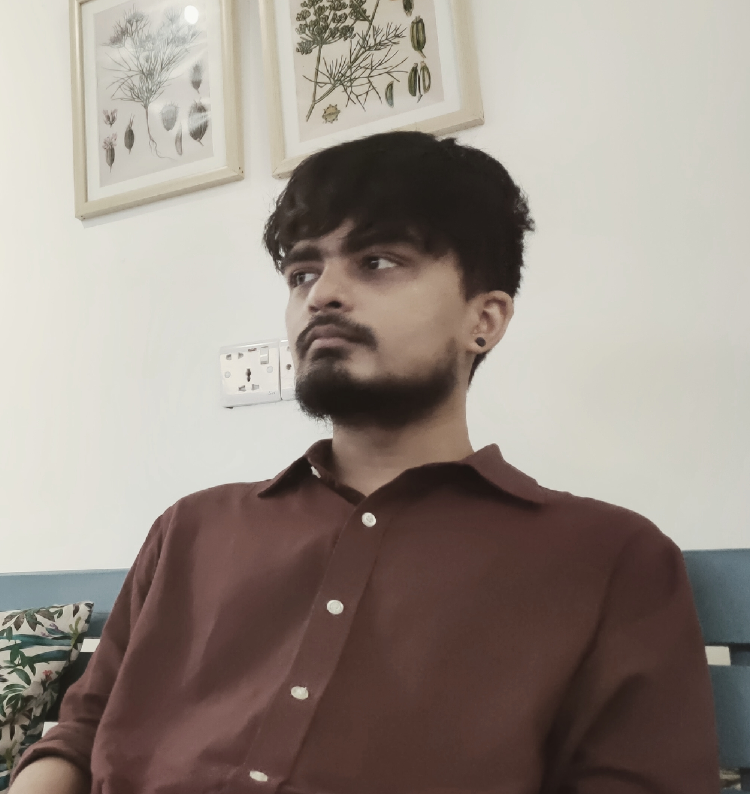
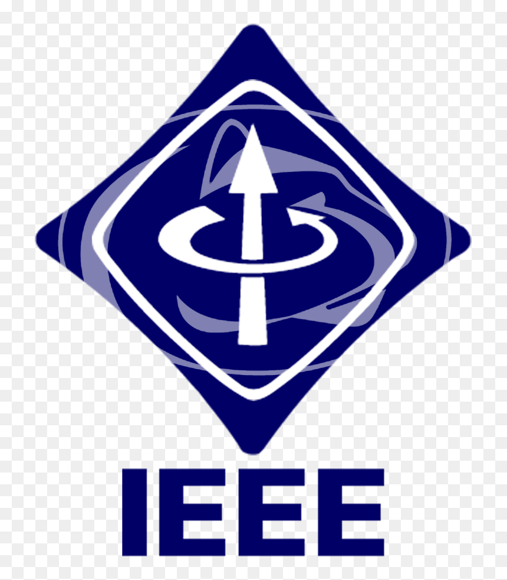
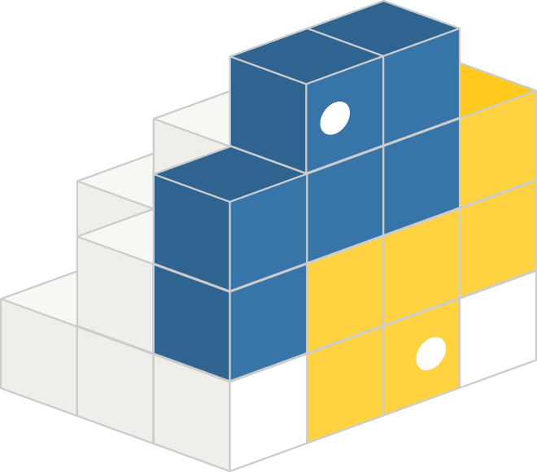

I'm a recent graduate from Independent University, Bangladesh. I majored in Computer Science & Engineering while minoring in Economics. I am addicted to coding and Python is my go-to language.
Currently I'm working as a Researcher at Artificial Intelligence and Cybernetics Lab . My current expertise extends towards Geospatial data, including collection, management, analysis and visualization along with applying Deep Learning techniques for land cover classification and feature extraction from satellite & aerial imagery. Outside my domain of expertise, I have an interest in Natural Language Processing, Computational Economics, etc. I'm also working as a part-time coding instructor at Light of Hope , it is the only organization in Bangladesh that helps school students to enchance their skills and creativity for future endeavours.
Besides programming, I like to read, write, watch movies, browse Reddit etc. Check out my favourite subreddit r/Glitch_in_the_Matrix.
Remote Sensing Data Analysis on Bangladesh using Deep Learning
Proceedings
A Deep-learning framework customized for novel categorization method to classify cities of the developing world
Sensors Journal | MDPI | 2021 (Proceedings)
A Novel Disaster Image Data-set and Characteristics Analysis
25th International Conference on Pattern Recognition | Milano, ITALY | 2021.
Deep-learning coupled with novel categorization method to classify the urban environment of the developing world
International Conference on Remote Sensing, Environment and Transportation Engineering | Paris, France | 2020.
LULC Segmentation of RGB Satellite Image Using FCN-8
SLAAI-International Conference on Artificial Intelligence | Belihuloya, Sri Lanka | 2019.
Image Pre-processing on NumtaDB for Bengali Handwritten Digit Recognition
International Conference on Bangla Speech and Language Processing | Sylhet, Bangladesh | 2018.
Zenith 
Zenith is a high-level Python library made for data processing. It's a tool for data manipulation and processing in Python ecosystem.
Enigma Simulator
This is a simulator of Enigma Machine used in World War-II by the Nazi Germany. Enigma was a encryption device used by the Airforce and Navy during the war to communicate. The app was built with pure python using streamlit as the framework.
During my undergrad, I had taught these courses working as a TA. Mostly took lab classes but had some opportunity to take theory classes too.
CSC317 - Numerical Method
- An introduction to modern numerical approximation techniques. Topics included floating point computation, accuracy and errors, solutions of single variable equations, interpolation, polynomial approximation, numerical differentiation and integration, methods for solving single variable equations, systems of linear equations, first order differential equations and initial value problems. MATLAB used to solve problem sets.
CSC204 - Data Structure
- Data representation and storage in elementary data structures like arrays and linked lists. Abstract Data Types (ADT): Stack, Queue, Priority Queue. Comparative analysis of different implementations of ADTs (Array based and linked list based). Binary Search Tree (including red/black trees), Heap, Efficient Priority Queue (Heap based). Complexity analysis of dictionary operations (insertion/deletion/search) on ADTs. Use of data structures in the design and implementation of smart searching and sorting algorithms (Binary search, Heap sort). Graphs (Connectivity graph, Directed and Undirected graph).
CSC101 - Introduction to Programming
- Introduction to computer programming and modern software development paradigms using a high level language like C++. Topics range from first principles such as data types and conditional statements to functions, arrays and string manipulation. Primary emphasis is given to developing problem solving techniques and good programming style using an object-oriented approach.
Making a Python Library with PyPI